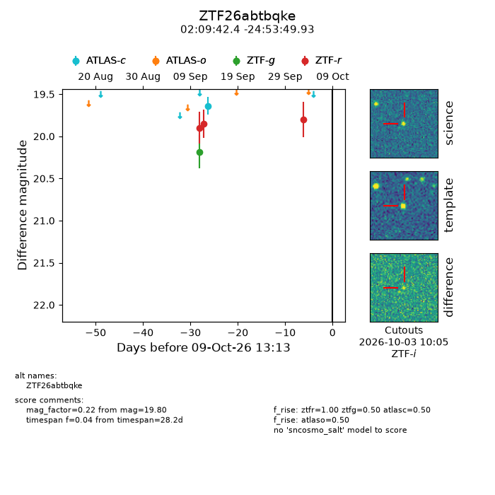
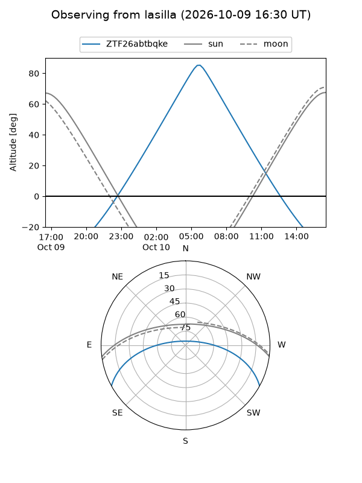
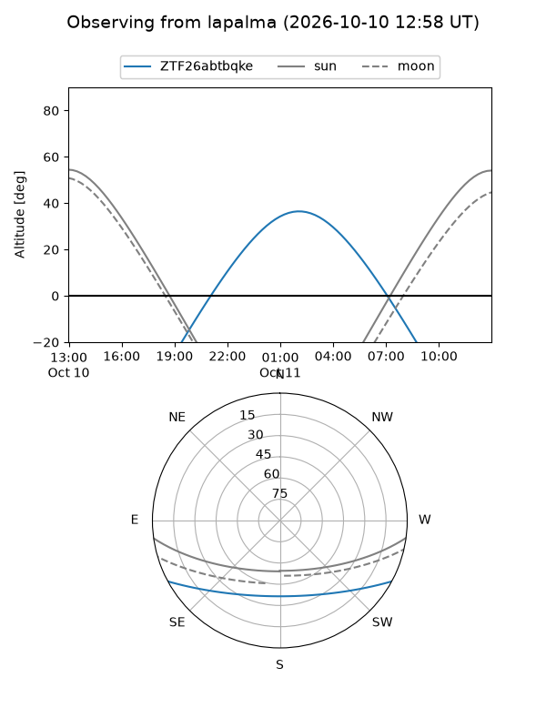
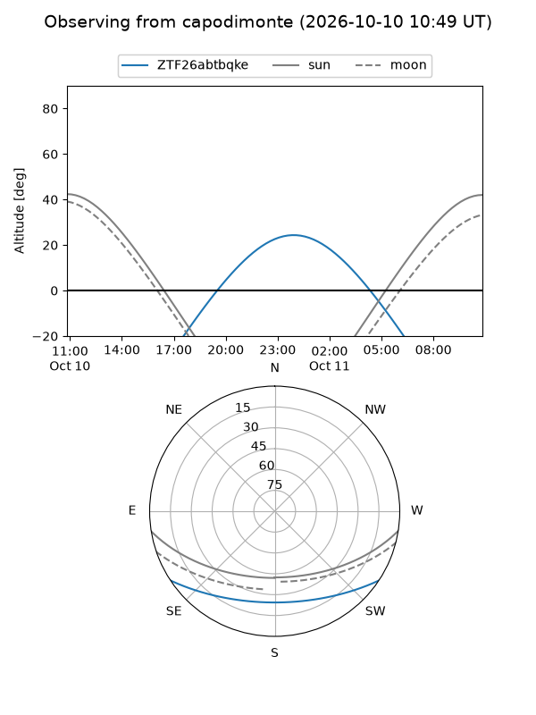
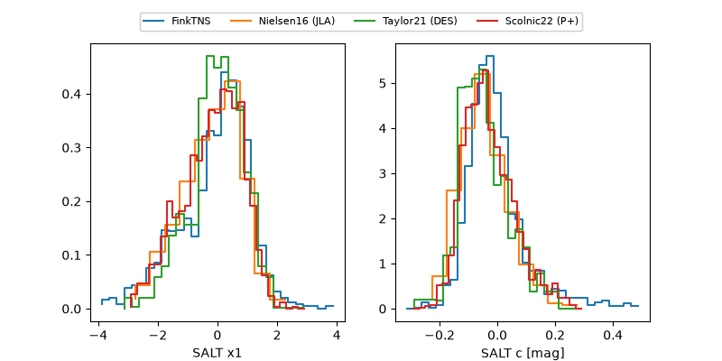

ZTF26abtbqke
Target ZTF26abtbqke at 2026-10-09 13:15
Aliases and brokers:
FINK-ZTF: ztf.fink-portal.org/ZTF26abtbqke
Lasair-ZTF: lasair-ztf.lsst.ac.uk/objects/ZTF26abtbqke
ALeRCE-ZTF: alerce.online/object/ZTF26abtbqke
Direct TNS query: direct search
alt names
ZTF26abtbqke (ztf,fink_ztf)
Coordinates:
equatorial (ra, dec) = 32.4265,-24.89720
equatorial (HMS+DMS) = 02:09:42.36,-24:53:49.93
galactic (l, b) = (210.0969,-72.29257)
Flags:
Photometry:
last atlasc=19.64, atlaso=nan, ztfg=20.18, ztfr=19.80
1 atlasc, 1 atlaso, 1 ztfg, 3 ztfr detections
Lightcurve

Visibility



Additional plots
